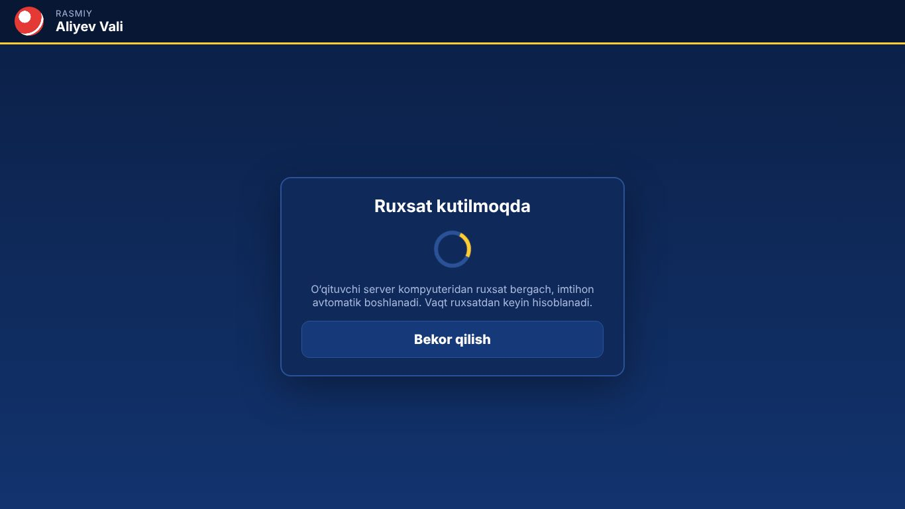
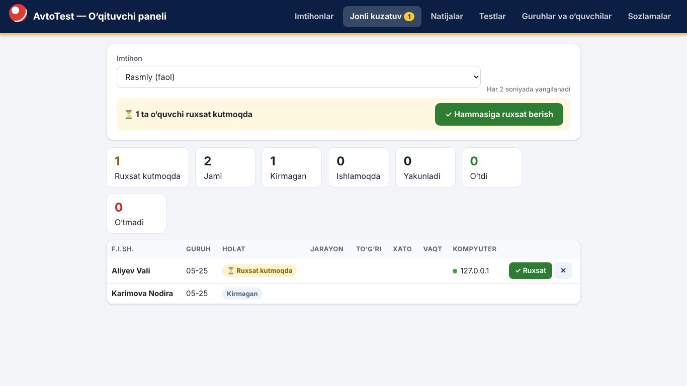
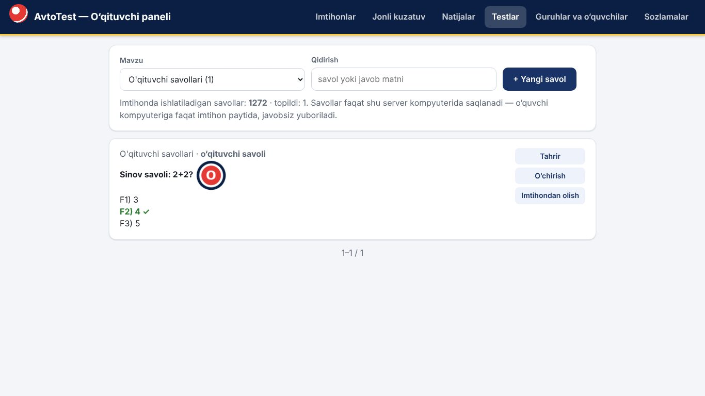

Qanday ishlaydi
server kompyuter: savollar, guruhlar, natijalar, ruxsat
har bir o‘quvchi kompyuteri: faqat imtihon oynasi
Barcha testlar faqat server kompyuterida saqlanadi. O‘quvchi kompyuteriga savollar imtihon paytida, to‘g‘ri javobsiz yuboriladi.
Imkoniyatlar
YHQ (VM 2022-yil 172-son qarori), belgilar, chiziqlar, vaziyat rasmlari, birinchi tibbiy yordam.
20 savol, 25 daqiqa, 2 tagacha xato; javob F1–F4 bilan, 3-xatoda imtihon to‘xtaydi.
O‘quvchi kiradi va kutadi — o‘qituvchi «Ruxsat» bosgandagina test va vaqt boshlanadi.
Kim qaysi savolda, nechta xato, qancha vaqt qoldi. +5 daqiqa, qayta topshirish.
«Testlar» bo‘limida savol qo‘shish (rasm bilan), keraksizini imtihondan olish.
Excel‘ga yuklab olish va chop etish. Ma’lumotlar har kuni zaxiraga ko‘chiriladi.
O‘rnatish
- ZIP‘ni server (o‘qituvchi) kompyuteriga yuklab oling va papkaga oching, masalan
D:\AvtoTest_LAN. - Oqituvchi.exe ni ishga tushiring. Windows Firewall oynasida «Частные сети / Private» ni belgilab, «Разрешить / Allow» ni bosing.
- Ochilgan panelga
adminparoli bilan kiring va parolni «Sozlamalar»da o‘zgartiring. Guruh va o‘quvchilarni qo‘shing (Excel‘dan nusxalab qo‘yish mumkin). - «Imtihonlar» → «+ Yangi imtihon» → «Boshlash».
- O‘quvchi kompyuterlariga Oquvchi.exe ni ko‘chiring va ishga tushiring — u serverni o‘zi topadi. O‘quvchi guruhi va ismini tanlaydi.
- «Jonli kuzatuv» bo‘limida «Hammasiga ruxsat berish» ni bosing — imtihon boshlanadi.
Oquvchi.exe o‘rnatmasdan ham bo‘ladi: istalgan brauzerda (hatto telefonda) http://server-IP:8080 manzilini oching. Server IP manzili o‘qituvchi panelining tepasida ko‘rsatiladi.
Ekranlar



Muammo bo‘lsa
Kompyuterlar bitta tarmoqdami? Server kompyuterida Firewall ruxsati berilganmi? Oquvchi ekranida server IP‘sini qo‘lda kiriting.
Windows sozlamalarida tarmoq turini «Частная / Private» qiling.
Alt+F4. Oddiy oynada ochish uchun oquvchi.ini faylida kiosk=0 qiling.